Katsuyama, Fukui: things to do, food and stays
Katsuyama · Fukui
Katsuyama
Highlighted on the Fukui map.
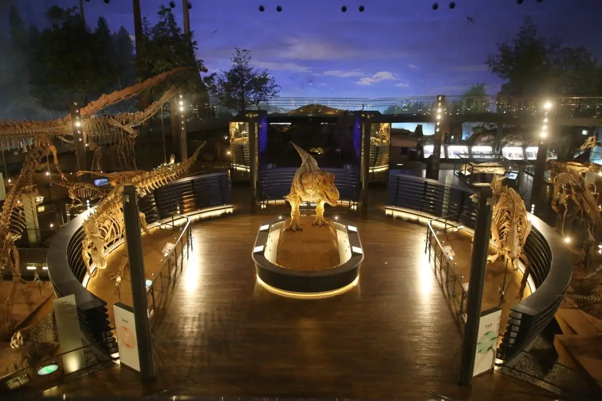
Stay
JAM福井勝山東急ホテル＆リゾーツ（旧：ホテルハーヴェストスキージャム勝山）
JAM Fukui Katsuyama Tokyu Hotel & Resorts (Kyu : Hotel Havesutosukijamu Katsuyama)
Hotel in Katsuyama with ski access.
Garage Resort Neutral Katsuyama
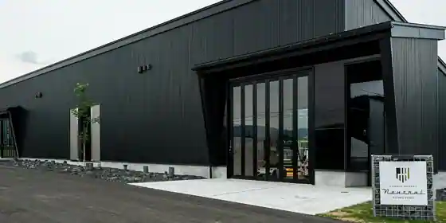
Garage Resort Neutral Katsuyama
板甚
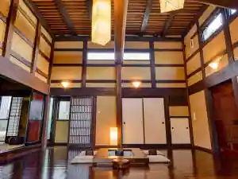
Ita Jin
ディノハウス勝山１
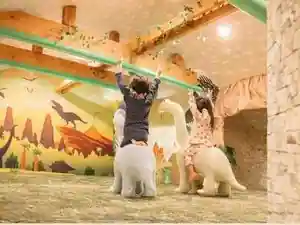
Dino House Katsuyama 1
ディノハウス勝山２
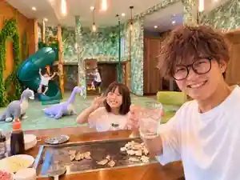
Dino House Katsuyama 2
Inn in Hon, Katsuyama with family-friendly stays.
勝山ニューホテル
Katsuyama Nyu Hotel
日帰り天然温泉 恐竜のお宿&SPA
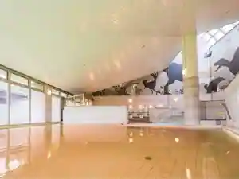
Higaeri Tennen Onsen Kyoryu No Yado &SPA
Inn at Higaeritennen Onsen in Muraoka, Katsuyama with family-friendly stays.
JAM福井勝山東急ホテル＆リゾーツ
JAM Fukui Katsuyama Tokyu Hotel & Resorts
ペンション星の子
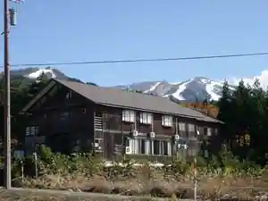
Pension Hoshi No Ko
Pension in Katsuyama with ski access.
あまごの宿
Amagono Yado
Inn in Noko, Katsuyama with riverside setting.
Dining
手打ちそば 八助
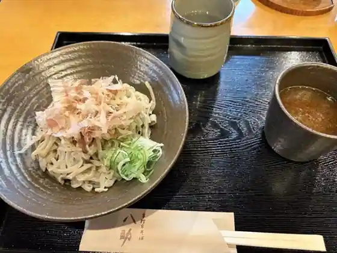
Teuchi Chisoba Hachi Jo
金花堂 はや川 勝山本店
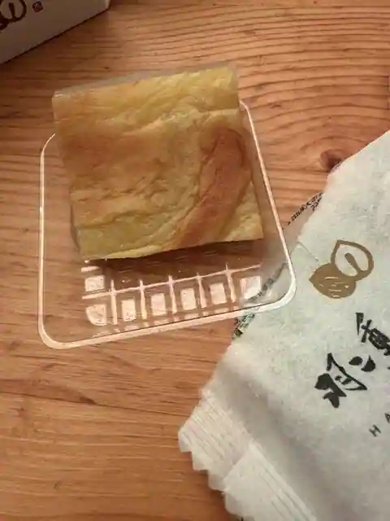
Kinka Do Haya Kawa Katsuyama Hon
グリルやまだ
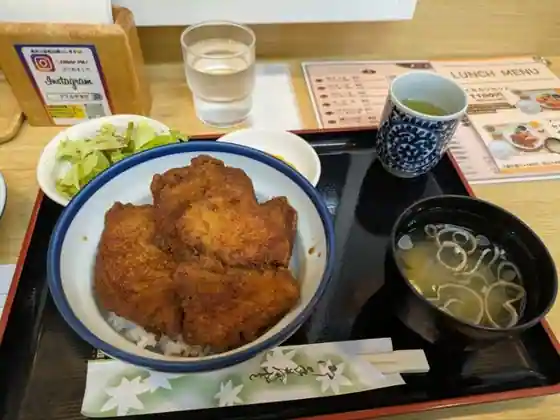
Grill Yamada
福井県立恐竜博物館 レストラン
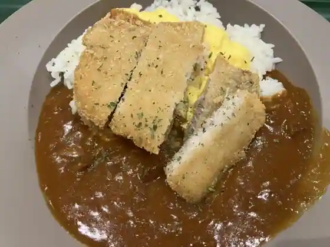
Fukuiken Ritsu Kyoryu Hakubutsukan Restaurant
好太郎
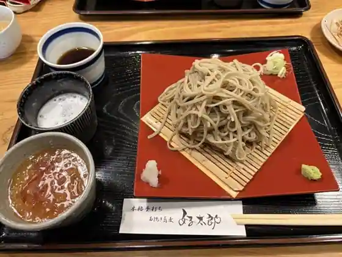
Kotaro
みるく茶屋 本店
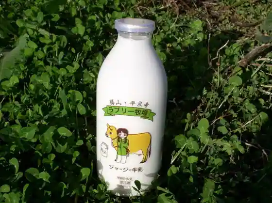
Miruku Chaya Hon
越前そば処 勝食
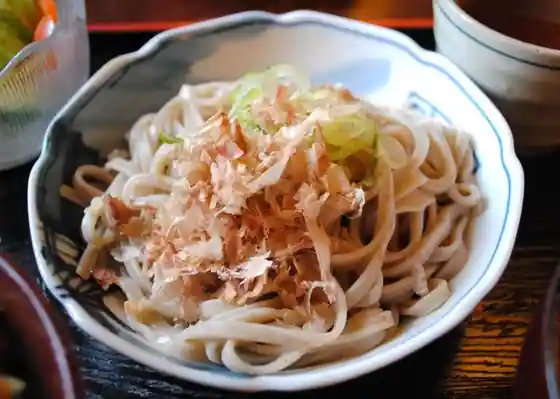
Echizen Soba Tokoro Kachi Shoku
ROKUSAI
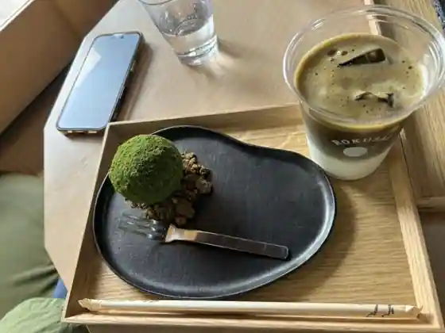
ROKUSAI
手打ちそば どうせき
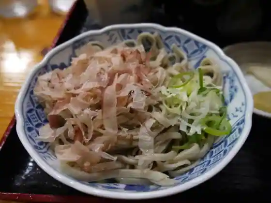
Teuchi Chisoba Doseki
べり果
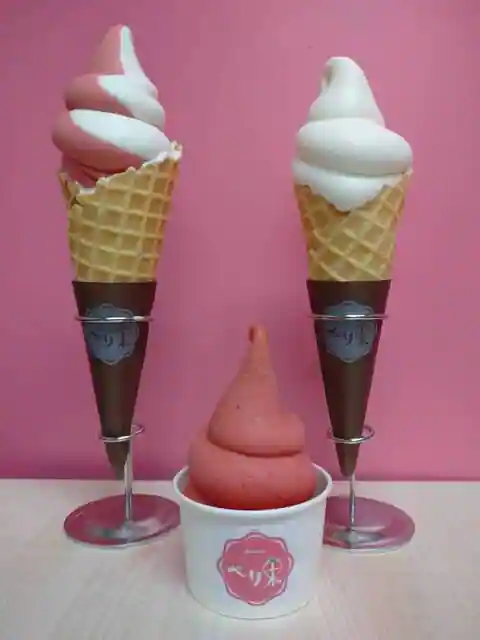
Beri Ka
なごや
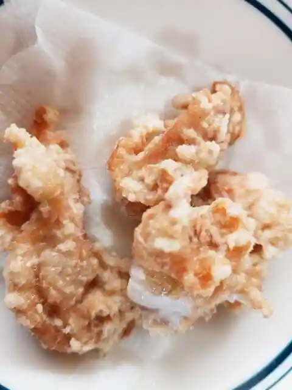
Nagoya
福彩り食堂 のむら屋
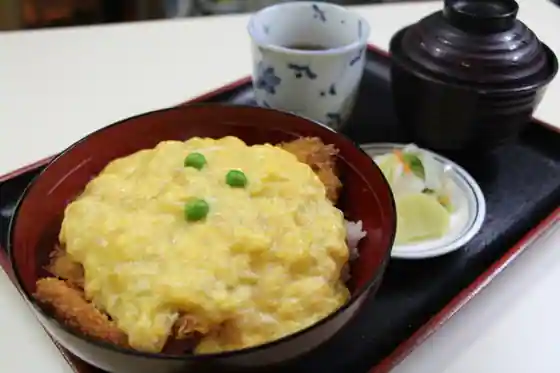
Fuku Irodori Shokudo Nomura Ya
峰
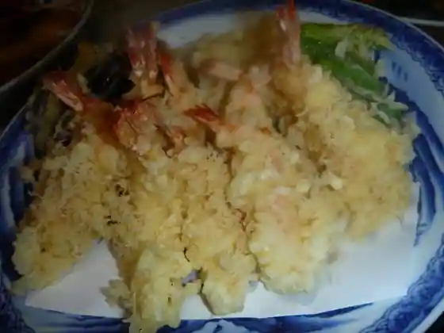
Mine
食庵おり田
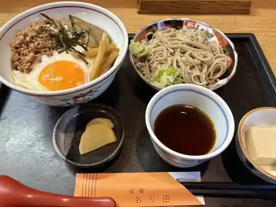
Shoku Iori Ori Ta
徳兵衛
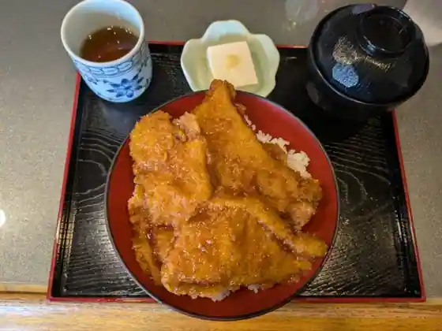
Tokubyoe
道の駅 恐竜渓谷かつやま
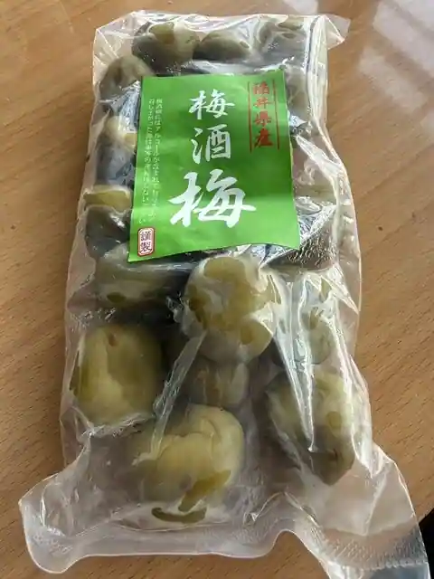
Michi No Eki Kyoryu Keikoku Katsuyama
ごはん屋ごっつぉ
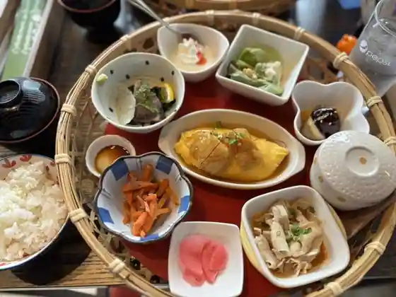
Gohan Ya Gottsuo
おいしい、ちよ鶴
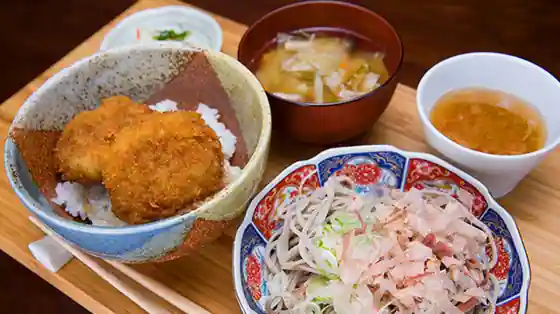
Oishi, Chiyo Tsuru
そば処 まつや
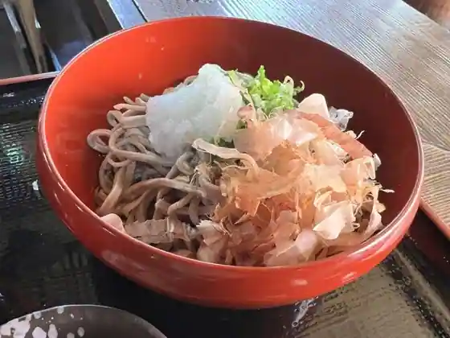
Soba Tokoro Matsuya
天心
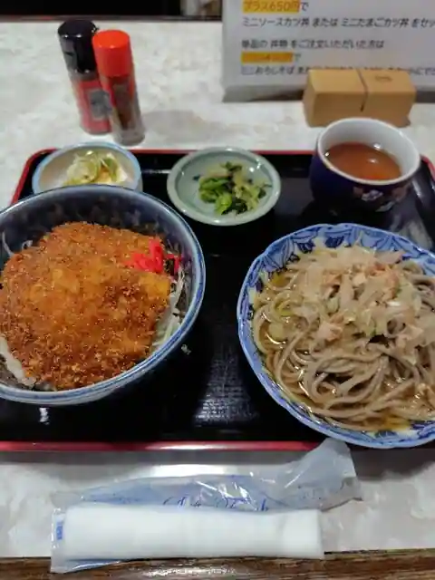
Tenshin
銀寿司
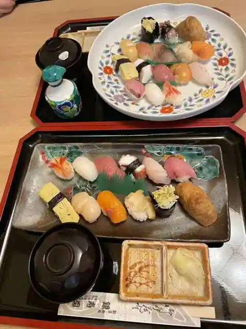
Gin Sushi
みどり亭
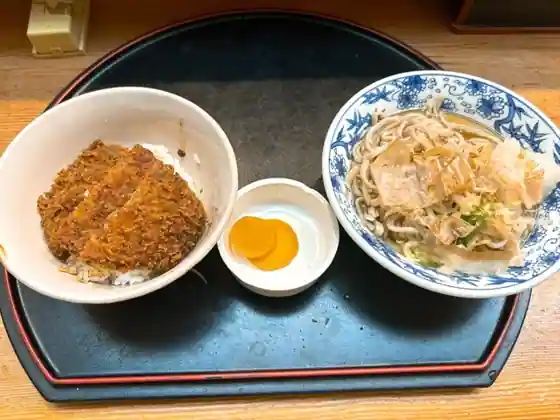
Midori Tei
平泉寺のソフトクリーム屋さん
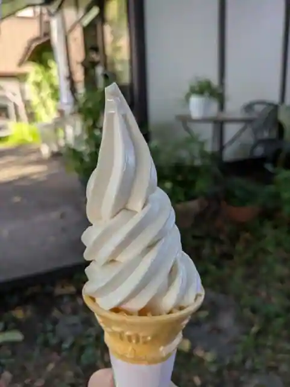
Hiraizumi Tera No Sofutokurimu Ya San
花月楼
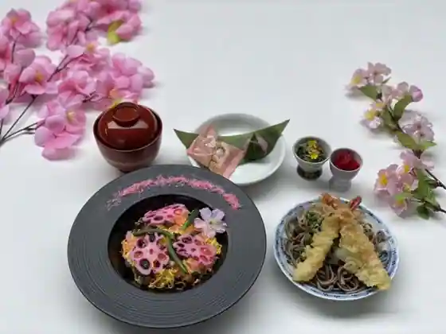
Kagetsu Ro
Sights
Fukui Prefectural Kyoryu Museum
Hakusan Hiraizumi Tera / Hiraizumi Tera Hakusan Shrine
Echizen Great Buddha
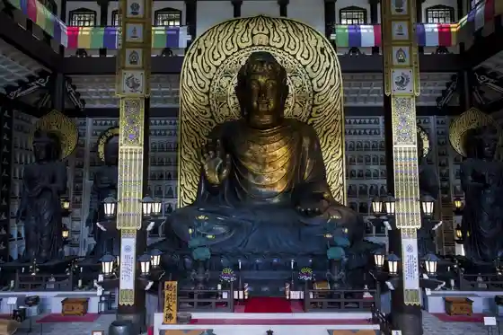
JAM TERRACE (JAM Terasu)
Katsuyama Di no Park
Yagai Kyoryu Museum
Hataya Memorial Museum Yumeore Katsuyama
Roadside Station Kyoryu Keikoku Katsuyama
Katsuyama Shiro Museum
Subeniashoppuraputoru
Jun Saishoku Matsuri Kagetsu Ro
Hon Tera Onsen
Toritate Yama
Sekito Yama
JAM Fukui Katsuyama Maunten Resort
no Ko Town no Kosumosu Hatake
Oya Tani Hakusan Shrine (Oya Tani no Oiwa)
Oku Koshidaka Hara Ranch
Howaitozaurusu
Katsuyama Jiotaminaru
JAM Fukui Katsuyama Maunten Resort Guriinshiizun (4 Gekka Jun 11 Gatsu Jojun)
Katsuyama Benten Sakura
Ippon Yoshihisa Ho Main Shop
Katsuyama Nature Juku
Hakusan Hiraizumi Tera Rekishi Tan Yu Kan
Beri Ka
e-bike Rentasaikuru | Fukui Katsuyama Kyoryu Museum no Kanko Nimo
Momijibafu no Namiki
Kokia Hatake (Roadside Station Kyoryu Keikoku Katsuyama)
Echizen Zenjo Michi
Iwaya Kannon
Bengataki
Jamusupotsuparaguraidasukuru
Mori no Nekawa no Ne IWAYA
Tsuji Kannon Do
Butan Museum
Yodogawa
Minami Bridge no Sakura Namiki
Shikatani Kawa
Toritate Yama Mizu Basho
Bambi Line